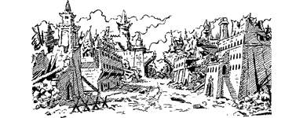

309
You lower your head and force yourself to trudge uphill against the storm, your feet sinking ankle-deep into the barren volcanic dust with every laboured step. Keeping your eyes shut tight against the stinging, gritty winds, you trust solely to your Magnakai senses to steer you on the correct course towards the Darkland city. Only when you reach the top of the ridge do you attempt to look around at the bleak domain. The Skyrider is lost from sight, shrouded by the swirling grey clouds. Kaag, too, remains hidden for some minutes until a sudden lull in the storm clears the southern vista. Then, what you see makes your blood run cold.
In your lifetime you have gazed upon many awe-inspiring cities, but few compare with the enormous size and monstrous grandeur of Kaag. A coal-black curtain-wall constructed of massive blocks of smooth, featureless stone, encircles this city, forty miles wide. At its centre there arises a gigantic citadel of black marble, pyramid-shaped and slitted with numerous vents to allow what passes for air to circulate within. Its highest point towers two miles above the desolate plain. Thunder booms and streaks of blue-white lightning earth themselves against its walls, drawn from the rolling storm clouds gathered menacingly overhead.
{kind=link}

At first the fortress seems wholly impregnable; then you notice that the outer wall is not entirely intact. Illuminated by the infrequent electrical flashes, you see that a vast section of the battlements, close to the North Gate, have collapsed. Also, away to the east, a mile-long section has fallen outwards to litter the plain with huge black cubes of stone. You are surprised to note that no attempt has been made to repair these breaches and, consequently, access to the city could be effected at either place with relative ease.
If you wish to enter Kaag through the breach in the north wall, turn to 88.
If you decide instead to enter Kaag through the east wall, turn to 235.